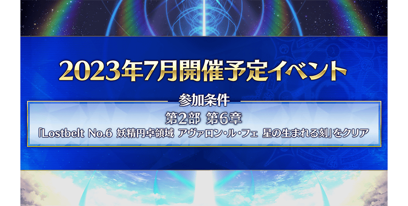
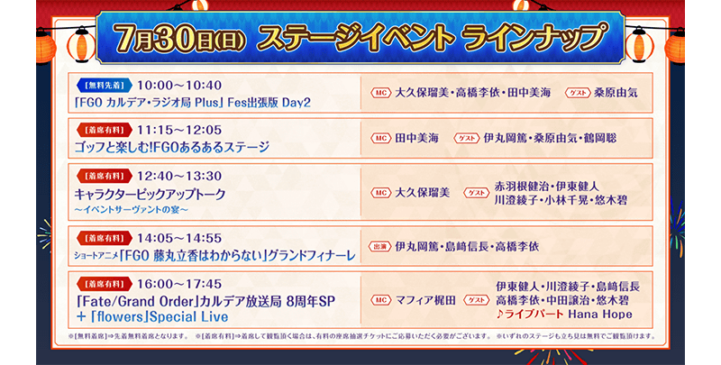
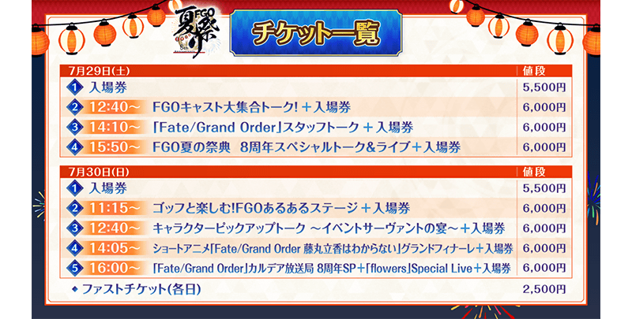
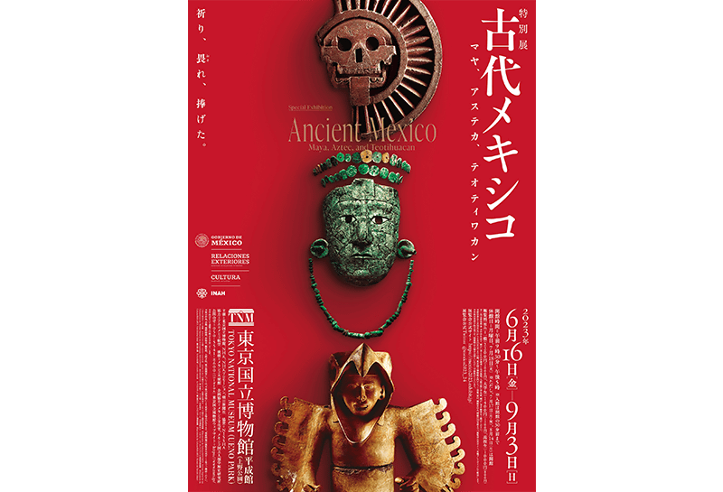
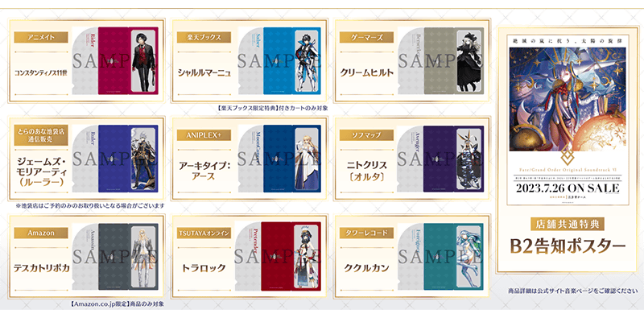

感謝您使用「Fate/Grand Order」。
在2023年6月14日(三)放送的「Fate/Grand Order 迦勒底放送局 Vol.20 奏章Ⅰ 虛數羅針內界 平面之月 開幕前夕 & FGO Fes. 2023 SP」發表了智慧型手機向FateRPG「Fate/Grand Order」為主的FGO PROJECT新情報。
以下介紹節目內發表的一部份新情報。
※本頁面皆為開發中圖片。會有與實際圖片相異的情況。
※在2023年6月14日(三)公開的內容皆為開發中，會有與實際內容不同的情況。
◆FGO 迦勒底放送局放送記念登入獎勵！◆
由於在「Fate/Grand Order 迦勒底放送局 Vol.20 奏章Ⅰ 虛數羅針內界 平面之月 開幕前夕 & FGO Fes. 2023 SP」2則對象推特的RT合計數達成7萬轉推，實施放送記念登入獎勵！
在期間中登入的話，贈送聖晶石14個。
2023年6月15日(四) 2:59前通過「特異點F 炎上汙染都市 冬木」的御主才成為對象。
◆贈送播送節目新繪製插圖的Twitter圖示與桌上型電腦桌布！◆
配發使用繪師めばる繪製的「Fate/Grand Order 迦勒底放送局 Vol.20 奏章Ⅰ 虛數羅針內界 平面之月 開幕前夕 & FGO Fes. 2023 SP」插圖的Twitter圖示及桌上型電腦桌布。
配發預定日:6月18日(日)18:00～(預定)
在預定6月18日(日) 17:00公開的「奏章Ⅰ」特設頁面配發。
◆「奏章Ⅰ 虛數羅針內界 平面之月」開幕！◆
發表了「奏章Ⅰ 虛數羅針內界 平面之月」預定自2023年6月18日(日) 17:00 開幕。
◆開幕預定日◆
2023年6月18日(日) 17:00～(預定)
◆開放條件◆
通過奏章序幕(プロローグ) 「應盡職責的呼喚 0」
※不需要通過亞種特異點(從Ⅰ到Ⅳ)、主線關卡第2部 第5.5章、第2部 第6.5章。
另外，發表了預定自2023年6月18日(日) 17:00舉辦的「平面之月 怖軍Pick Up召喚」預定登場的新從者「★5(SSR)怖軍」「★4(SR)難敵」。
並且，發表了預定自2023年6月18日(日) 17:00舉辦的「平面之月 怖軍Pick Up召喚」預定先行登場的3種常駐概念禮裝插圖。
※配合故事召喚的翻新，下述的概念禮裝在「平面之月 怖軍Pick Up召喚」的舉辦期間結束後，變得會從教學召喚被抽出，不會從故事召喚被抽出。 ・★4(SR)コードキャスト
◆「奏章Ⅰ 虛數羅針內界 平面之月」 電視廣告公開！◆
動畫製作：A-1 Pictures
公開了「奏章Ⅰ 虛數羅針內界 平面之月」的電視廣告。
◆「奏章Ⅰ 虛數羅針內界 平面之月」 電視廣告樂曲的配信決定◆
決定了「奏章Ⅰ 虛數羅針內界 平面之月」 電視廣告樂曲「A stain」的下載＆串流配信。
・「奏章Ⅰ 虛數羅針內界 平面之月」 電視廣告樂曲 「A stain」環みちる
配信時間:2023年6月14日(三) 23:00～
另外，也決定了解禁至今為止的電視廣告樂曲串流。
・「Sing My Heart ～魔法を奏でて～」伊莉莎白・巴托里〔灰姑娘〕(CV:大久保瑠美) ・「伍越同舟」Tetsu Yamamoto ・「Torrid」SAYA ・「陸劫輪廻 (feat. Yuriko Kaida)」スパイラル・ラダー
配信時間:2023年6月14日(三) 23:00～
※下載是好評配信中！
詳情請確認此處。
https://www.fate-go.jp/music/
◆預定2023年7月舉辦的活動的參加條件發表◆

發表了預定2023年7月舉辦活動的參加條件。
參加條件:通過「Lostbelt No.6 妖精圓卓領域 阿瓦隆・勒菲 星辰誕生之刻」
※不需要通過亞種特異點(從Ⅰ到Ⅳ)、主線關卡第2部 第5.5章。
另外，自現在舉辦中的【期間限定】『「奏章Ⅰ 虛數羅針內界 平面之月」開幕前夕宣傳活動』，主線關卡第1部＆第2部 第6章為止的消耗AP以期間限定成為0！＆第2部 第7章的消耗AP以期間限定成為1/4。
下述的期間中，到主線關卡第2部 第6章為止的消耗AP變成0、第2部 第7章的消耗AP變成1/4！(就算在戰鬥中撤退的情況，也會是同様的消耗量)
還有未通過主線關卡的御主玩家，請務必活用此機會！
◆舉辦期間◆
到6月28日(三) 11:59為止
◆對象關卡◆
消耗AP0:主線關卡第1部(從特異點F到終局特異點)
主線關卡第2部(從第1章到第6章)
消耗AP1/4:主線關卡第2部 第7章
※請注意主線關卡第2部 第5.5章、第2部 第6.5章、亞種特異點(從Ⅰ到Ⅳ)、主線分支為對象外。
※現在，現在到主線關卡第2部 第6章為止的消耗AP是永久變成1/2的狀態。因此，宣傳活動結束後，該主線關卡的消耗AP會變成1/2。
邁向預定2023年7月舉辦的活動，推進主線關卡敬請期待續報！
其他還有在期間中通過「Lostbelt No.7 黃金樹海紀行 冥界紀元 統御星球的存在」和「應盡職責的呼喚 0」給予聖晶石的追加任務的宣傳活動等舉辦中！
＞＞【期間限定】『「奏章Ⅰ 虛數羅針內界 平面之月」開幕前夕宣傳活動』的詳情在此
◆「Fate/Grand Order Fes. 2023 夏之祭典～8th Anniversary～」最新情報◆
發表了預定2023年7月29日(六)・30日(日)在幕張展覽館舉辦的「Fate/Grand Order Fes. 2023 夏之祭典～8th Anniversary～」的最新情報。
配合最新情報，公開了主視覺圖。
・立繪
武內崇
荒野
NOCO
本庄雷太
下越
・上色
こやまひろかず
・背景
LASENGLE
《新繪製從者一部份公開！》
《リヨ新繪製插圖追加公開！》
新繪製從者和リヨ新繪製插圖預定在超！A&G+版「Fate/Grand Order 迦勒底・廣播局 Plus」追加告知。敬請期待！
■Fate/Grand Order 迦勒底・廣播局Plus
超！A&G+版:每週五 20:00～21:00
地上波版:每週日 20:30～21:00
官方網站:https://www.joqr.co.jp/qr/program/fgo/
《周邊情報》
決定了「Fate/Grail League」收藏卡的販售。
《舞台活動 全體陣容》
發表了在2023年7月29日(六) ・30日(日)進行的舞台陣容與出演者情報。


《票券情報》
發表了票券的種類與金額。
※請注意只有入場券與附舞台觀賞券的入場券是不同券種。
※優先入場券只限先行抽選販售當選者只能申請。

《票券販售時間表》
・入場券(全9種)
【先行抽選販售】2023年6月14日(三) 19:00～6月25日(日) 22:59
【結果發表】2023年7月5日(三) 12:00
・優先入場券
【抽選販売】2023年7月5日(三) 16:00～7月11日(二) 22:59
【結果發表】2023年7月20日(四) 12:00
■「Fate/Grand Order Fes. 2023 夏之祭典～8th Anniversary～」特設網站
https://fes.fate-go.jp/
◆特別展「古代墨西哥 —馬雅、阿茲特克、特奧蒂瓦坎」 與「Fate/Grand Order」的聯動決定！◆
決定了特別展「古代墨西哥 —馬雅、阿茲特克、特奧蒂瓦坎」 與「Fate/Grand Order」的聯動。

一起公開了望月けい新繪製的插圖。
使用新繪製插圖的原創周邊也預定展開，敬請期待！
預定6月底以後在本展會場特設商店依序發售。
舉辦概要
東京會場:東京國立博物館 平成館
2023年6月16日(五)～9月3日(日)
福岡會場:九州國立博物館
2023年10月3日(二)～12月10日(日)
大阪會場:國立國際美術館
2024年2月6日(二)～5月6日(月・休)
■特別展「古代墨西哥 —馬雅、阿茲特克、特奧蒂瓦坎」
https://mexico2023.exhibit.jp/
◆「Fate/Grand Order Original Soundtrack Ⅵ」 試聽影片與分店舗特典公開◆
「Fate/Grand Order Original Soundtrack Ⅵ」的試聽影片在YouTube「【官方】Fate/Grand Order 頻道」公開了。另外，電視廣告也公開中。
並且公開了「Fate/Grand Order Original Soundtrack Ⅵ」的分店舗特典。

■「Fate/Grand Order Original Soundtrack Ⅵ」
發售日:2023年7月26日(三)
價格:4,180円(含稅)
樣式:全3張組
初次規格特典:三方背盒
詳情請確認此處。
https://www.fate-go.jp/music/ost6.html
◆Fate/Grand Order「Beyond the tale」企劃情報◆
Fate/Grand Order「Beyond the tale」電視廣告 第8彈為止公開中。
下次的第9彈預定在6/18(日) 全國富士電視台系列 22:15～放送「鬼滅之刃 刀匠村篇」内放映。
另外，評語企劃「與你的○○故事」開始！ 擔當電視廣告旁白的各位聲優的「請講訴你與『從者』的故事」為主題的評語。
以後也預定每週更新，將自FGO官方Twitter公告。
■「Fate/Grand Order Beyond the tale」企劃 特設網站
https://beyond.fate-go.jp/
◆「更加看漫畫了解！Fate/Grand Order」單行本第4集的發售決定！◆
發表了「更加看漫畫了解！Fate/Grand Order」單行本第4集在8月10日(四)發售。
商店頁面自6月23日(五)開放，敬請期待！
■「更加看漫畫了解！Fate/Grand Order」
https://www.fate-go.jp/manga_fgo3/
◆「Fate/Grand Order -First Order ＆ -MOONLIGHT/LOSTROOM- Blu-ray Disc BOX」情報◆
決定了收錄到2023年1月為止FGO的OP・CM做為「Fate/Grand Order -First Order ＆ -MOONLIGHT/LOSTROOM- Blu-ray Disc BOX」的影像特典。
《影像特典》
第1部OP・第2部OP・第2部後期OP
・2015年～2023年1月(Lostbelt No.7 黃金樹海紀行 冥界紀元(後篇)為止的動畫CM)
《發售日》
2023年7月26日(三)
《価格》
・Blu-ray Disc BOX 8,800円(含稅)
・Original Soundtrack 3,520円(含稅)
■「Fate/Grand Order」動畫入口網站
https://anime.fate-go.jp/bdbox-ost/
◆短篇動畫「Fate/Grand Order 搞不懂的藤丸立香」特別精選放送・播送決定◆
自終於迎來高潮的短篇動畫「「Fate/Grand Order 搞不懂的藤丸立香」，從目前為止播送的內容將「謎丸」魅力濃縮成珠寶的5集做為特別精選送上！
【放送・播送時間】
TOKYO MX・BS11・栃木電視台 7月2日(日) 19:15～
群馬電視台 7月2日(日) 24:45～
ABEMA・niconico生放送 7月2日(日) 19:15～ (有重播)
短篇動畫「Fate/Grand Order 搞不懂的藤丸立香」的最終回預定在「Fate/Grand Order Fes. 2023 夏之祭典 ～8th Anniversary～」的舞台活動公開，敬請期待！
短篇動畫「Fate/Grand Order 搞不懂的藤丸立香」每週二在FGO官方Twitter及YouTube「【官方】Fate/Grand Order 頻道」播送中！
■短篇動畫「Fate/Grand Order 搞不懂的藤丸立香」特設網站
https://anime.fate-go.jp/nazomaru/
■外傳漫畫「Fate/Grand Order 搞不懂的藤丸立香」
https://web-ace.jp/tmca/contents/2000027/
今後也請多多指教「Fate/Grand Order」。